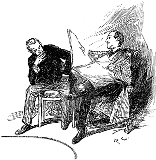

We had all been warned to appear before the magistrates upon the Thursday; but when the Thursday came there was no occasion for our testimony. A higher Judge had taken the matter in hand, and Jefferson Hope had been summoned before a tribunal where strict justice would be meted out to him. On the very night after his capture the aneurism burst, and he was found in the morning stretched upon the floor of the cell, with a placid smile upon his face, as though he had been able in his dying moments to look back upon a useful life, and on work well done.
"Gregson and Lestrade will be wild about his death," Holmes remarked, as we chatted it over next evening. "Where will their grand advertisement be now?"
"I don't see that they had very much to do with his capture," I answered.
"What you do in this world is a matter of no consequence," returned my companion bitterly. "The question is, what can you make people believe that you have done? Never mind," he continued, more brightly, after a pause. "I would not have missed the investigation for anything. There has been no better case within my recollection. Simple as it was, there were several most instructive points about it."
"Simple!" I ejaculated.
"Well, really, it can hardly be described as otherwise," said Sherlock Holmes, smiling at my surprise. "The proof of its intrinsic simplicity is, that without any help save a few very ordinary deductions I was able to lay my hand upon the criminal within three days."
"That is true," said I.
"I have already explained to you that what is out of the common is usually a guide rather than a hindrance. In solving a problem of this sort, the grand thing is to be able to reason backwards. That is a very useful accomplishment, and a very easy one, but people do not practice it much. In the every-day affairs of life it is more useful to reason forwards, and so the other comes to be neglected. There are fifty who can reason synthetically for one who can reason analytically."
"I confess," said I, "that I do not quite follow you."
"I hardly expected that you would. Let me see if I can make it clearer. Most people, if you describe a train of events to them, will tell you what the result would be. They can put those events together in their minds, and argue from them that something will come to pass. There are few people, however, who, if you told them a result, would be able to evolve from their own inner consciousness what the steps were which led up to that result. This power is what I mean when I talk of reasoning backwards, or analytically."
"I understand," said I.
"Now this was a case in which you were given the result and had to find everything else for yourself. Now let me endeavour to show you the different steps in my reasoning. To begin at the beginning. I approached the house, as you know, on foot, and with my mind entirely free from all impressions. I naturally began by examining the roadway, and there, as I have already explained to you, I saw clearly the marks of a cab, which, I ascertained by inquiry, must have been there during the night. I satisfied myself that it was a cab and not a private carriage by the narrow gauge of the wheels. The ordinary London growler is considerable less wide than a gentleman's brougham.
"This was the first point gained. I then walked slowly down the garden path, which happened to be composed of a clay soil, peculiarly suitable for taking impressions. No doubt it appeared to you to be a mere trampled line of slush, but to my trained eyes every mark upon its surface had a meaning. There is no branch of detective science which is so important and so much neglected as the art of tracing footsteps. Happily, I have always laid great stress upon it, and much practice has made it second nature to me. I saw the heavy footmarks of the constables, but I saw also the track of the two men who had first passed through the garden. It was easy to tell that they had been before the others, because in places their marks had been entirely obliterated by the others coming upon the top of them. In this way my second link was formed, which told me that the nocturnal visitors were two in number, one remarkable for his height (as I calculated from the length of his stride), and the other fashionably dressed, to judge from the small and elegant impression left by his boots.
"On entering the house this last inference was confirmed. My well-booted man lay before me. The tall one, then, had done the murder, if murder there was. There was no wound upon the dead man's person, but the agitated expression upon his face assured me that he had foreseen his fate before it came upon him. Men who die from heart disease, or any sudden natural cause, never by any chance exhibit agitation upon their features. Having sniffed the dead man's lips, I detected a slightly sour smell, and I came to the conclusion that he had had poison forced upon him. Again, I argued that it had been forced upon him from the hatred and fear expressed upon his face. By the method of exclusion, I had arrived at this result, for no other hypothesis would meet the facts. Do not imagine that it was a very unheard-of idea. The forcible administration of poison is by no means a new thing in criminal annals. The cases of Dolsky in Odessa, and of Leturier in Montpellier, will occur at once to any toxicologist.
"And now came the great question as to the reason why. Robbery had not been the object of the murder, for nothing was taken. Was it politics, then, or was it a woman? That was the question which confronted me. I was inclined from the first to the latter supposition. Political assassins are only too glad to do their work and to fly. This murder had, on the contrary, been done most deliberately, and the perpetrator had left his tracks all over the room, showing that he had been there all the time. It must have been a private wrong, and not a political one, which called for such a methodical revenge. When the inscription was discovered upon the wall, I was more inclined than ever to my opinion. The thing was too evidently a blind. When the ring was found, however, it settled the question. Clearly the murderer had used it to remind his victim of some dead or absent woman. It was at this point that I asked Gregson whether he had inquired in his telegram to Cleveland as to particular point in Mr. Drebber's former career. He answered, you remember, in the negative.
"I then proceeded to make a careful examination of the room, which confirmed me in my opinion as to the murderer's height, and furnished me with the additional details as to the Trichinopoly cigar and the length of his nails. I had already come to the conclusion, since there were no signs of a struggle, that the blood which covered the floor had burst from the murderer's nose in his excitement. I could perceive that the track of blood coincided with the track of his feet. It is seldom that any man, unless he is very full-blooded, breaks out in this way through emotion, so I hazarded the opinion that the criminal was probably a robust and ruddy-faced man. Events proved that I had judged correctly.
"Having left the house, I proceeded to do what Gregson had neglected. I telegraphed to the head of the police at Cleveland, limiting my inquiry to the circumstances connected with the marriage of Enoch Drebber. The answer was conclusive. It told me that Drebber had already applied for the protection of the law against an old rival in love, named Jefferson Hope, and that this same Hope was at present in Europe. I knew now that I held the clue to the mystery in my hand, and all that remained was to secure the murderer.
"I had already determined in my own mind that the man who had walked into the house with Drebber was none other than the man who had driven the cab. The marks in the road showed me that the horse had wandered on in a way which would have been impossible had there been any one in charge of it. Where, then, could the driver be, unless he were inside the house? Again, it is absurd to suppose that any sane man would carry out a deliberate crime under the very eyes as it were, of a third person, who was sure to betray him. Lastly, supposing one man wished to dog another through London, what better means could he adopt than to turn cabdriver. All these considerations led me to the irresistible conclusion that Jefferson Hope was to be found among the jarveys of the Metropolis.
"If he had been one, there was no reason to believe that he had ceased to be. On the contrary, from his point of view, any sudden change would be likely to draw attention to himself. He would probably, for a time at least, continue to perform his duties. There was no reason to suppose that he was going under an assumed name. Why should he change his name in a country where no one knew his original one? I therefore organized my Street Arab detective corps, and sent them systematically to every cab proprietor in London until they ferreted out the man that I wanted. How well they succeeded, and how quickly I took advantage of it, are still fresh in your reflection. The murder of Stangerson was an incident which was entirely unexpected, but which could hardly in any case have been prevented. Through it, as you know, I came into possession of the pills, the existence of which I had already surmised. You see, the whole thing is a chain of logical sequence without a break or flaw."
"It is wonderful!" I cried. "Your merits should be publicly recognized. You should publish an account of the case. If you won't, I will for you."
"You may do what you like, Doctor," he answered. "See here!" he continued, handing a paper over to me, "look at this!"
It was the Echo for the day, and the paragraph to which he pointed was devoted to the case in question.
"The public," it said, "have lost a sensational treat through the sudden death of the man Hope, who was suspected of the murder of Mr. Enoch Drebber and of Mr. Joseph Stangerson. The details of the case will probably be never known now, though we are informed upon good authority that the crime was the result of an old-standing and romantic feud, in which love and Mormonism bore a part. It seems that both the victims belonged, in their younger days, to the Latter Day Saints, and Hope, the deceased prisoner, hails also from Salt Lake City. If the case has had no other effect, it, at least, brings out in the most striking manner the efficiency of our detective police force, and will serve as a lesson to all foreigners that they will do wisely to settle their feuds at home, and not to carry them on to British soil. It is an open secret that the credit of this smart capture belongs entirely to the well-known Scotland Yard officials, Messrs. Lestrade and Gregson. The man was apprehended, it appears, in the rooms of a certain Mr. Sherlock Holmes, who has himself, as an amateur, shown some talent in the detective line and who, with such instructors, may hope in time to attain to some degree of their skill. It is expected that a testimonial of some sort will be presented to the two officers as a fitting recognition of their services."
"Didn't I tell you so when we started?" cried Sherlock Holmes with a laugh. "That's the result of all our Study in Scarlet: to get them a testimonial!"
"Never mind," I answered; "I have all the facts in my journal, and the public shall know them. In the meantime you must make yourself contented by the consciousness of success, like the Roman miser—
"'Populus me sibilat, at mihi plaudo
Ipse domi simul ac nummos contemplar in arca.'"